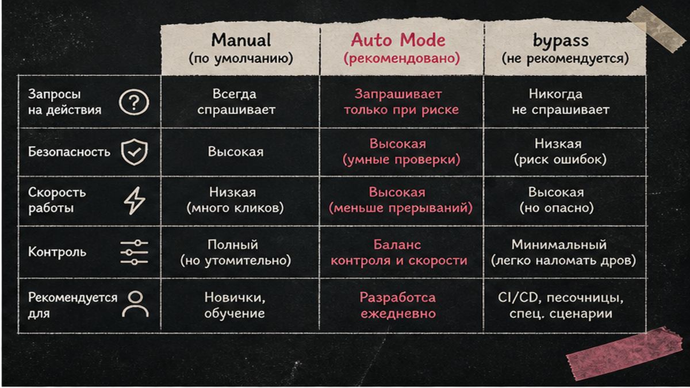
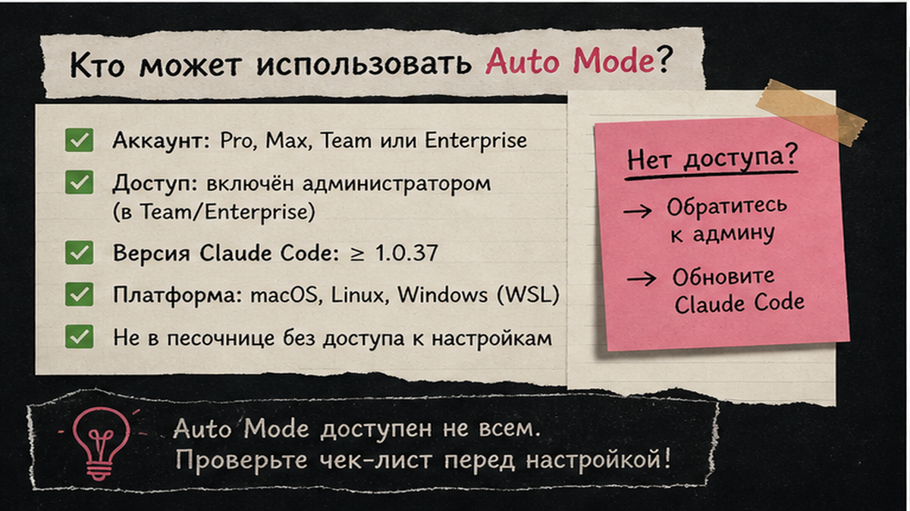
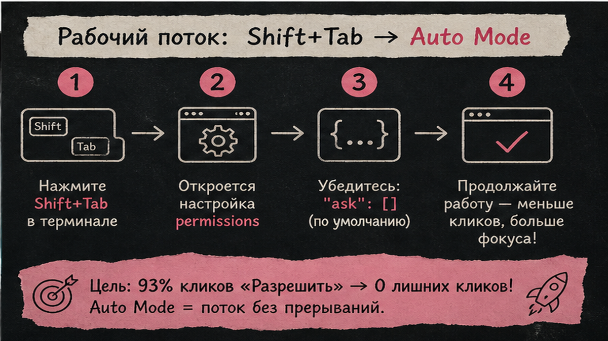

Длинная задача в Claude Code упирается в десятки подтверждений: push, тесты, деплой. Auto Mode снимает рутину, но не отключает защиту, как флаг --dangerously-skip-permissions. За 20–40 минут вы проверите eligibility, включите auto через Shift+Tab или CLI, пропишете autoMode.environment в ~/.claude/settings.json, проверите правила через claude auto-mode config и пройдете чеклист перед unattended-сессией.
TL;DR / Быстрый инсайт: Auto Mode – режим, где классификатор решает, можно ли выполнить tool call без вашего клика. Настройка только в ~/.claude/settings.json: defaultMode, autoMode.environment с "$defaults", при необходимости hard_deny. Проверка: claude auto-mode defaults → claude auto-mode config. Не путайте с /goal и не используйте bypass permissions на prod.
Auto Mode вышел 24 марта 2026 как research preview permission mode. По данным Anthropic, пользователи вручную одобряют 93% permission prompts – значит, узкое место не в "опасности", а в частых кликах. Классификатор (отдельная проверка перед tool call) видит ваши сообщения и вызовы инструментов, но не внутренние рассуждения ассистента. При 3 блокировках подряд или 20 суммарно сессия эскалирует к человеку. Запись файлов внутри проекта часто идет без классификатора – Tier 2 в терминологии docs.

Permission mode задает, кто жмет "разрешить" перед действием агента. Manual спрашивает почти всегда. acceptEdits принимает правки файлов. plan строит план. auto добавляет классификатор на остальные calls. --dangerously-skip-permissions отключает проверки – как ехать без ремня.
| Режим | Когда | Защита | Риск |
|---|---|---|---|
| Manual | Новый репо, prod | Максимальная | Много кликов |
| acceptEdits / plan | Локальный рефакторинг | Средняя | Shell все еще спрашивает |
| Auto Mode | Refactor + tests на доверенной инфра | Классификатор + deny | False positive (~8.5%) или пропуск (~17% FNR) |
| --dangerously-skip-permissions | Только изолированный sandbox | Минимальная | Force push, curl | bash |
Итоговый вердикт: Для unattended на shared infra – auto mode с autoMode.environment. Bypass – только в контейнере без секретов. Auto не равен /goal: auto убирает prompts на tool внутри хода, /goal оценивает прогресс между ходами. См. также динамические workflow Claude Code.
Делайте: сначала manual, потом auto. Не делайте: bypass на репо с deploy keys.

Нужен Claude Code v2.1.83+ (claude --version). Auto на всех планах; на Team/Enterprise Owner включает в admin. Модели: API – Opus 4.6+ или Sonnet 4.6+; Bedrock/Vertex/Foundry – Sonnet 5, Opus 4.7/4.8. Там auto выключен без CLAUDE_CODE_ENABLE_AUTO_MODE=1 (v2.1.158+).
Делайте: фиксируйте версию CLI в README. Не делайте: полагаться на анонс "только Team" от 24.03 – docs на июль 2026 указывает все планы.

В активной сессии нажимайте Shift+Tab: default → acceptEdits → plan → auto (если eligible). Первый вход в auto – one-time opt-in: вы явно соглашаетесь с правилами research preview. Для одной сессии без переключения: claude --permission-mode auto. Чтобы каждый запуск стартовал в auto, добавьте defaultMode: "auto" в ~/.claude/settings.json (Linux/macOS) или %USERPROFILE%\.claude\settings.json (Windows). С v2.1.142+ project-level .claude/settings.json и settings.local.json игнорируют defaultMode: "auto" – это защита от подмены правил через pull чужого репо.
Workflow: Eligibility → Shift+Tab или --permission-mode auto → opt-in → defaultMode (опц.) → тест → /permissions → Recently denied
{ "permissions": { "defaultMode": "auto" } }
Делайте: user-level или managed policy. Не делайте: коммитить autoMode в shared .claude/settings.json – репозиторий не может inject allow rules.
Блок autoMode – prose rules на английском, понятные классификатору. environment описывает контекст: trusted GitHub org, internal API, staging domains. allow перечисляет разрешенные паттерны, soft_deny – "спросить, если сомнение", hard_deny – красные линии без override. Всегда включайте "$defaults" в allow – иначе потеряете штатные блокировки Anthropic: curl | bash, force push, prod deploys, mass cloud delete, IAM grants. Приоритет правил: hard_deny → soft_deny → allow → explicit user intent (для soft). Репозиторий не может положить autoMode в shared settings – inject allow rules из pull request невозможен.
{ "permissions": { "defaultMode": "auto" }, "autoMode": { "environment": "GitHub org mycompany. API api.mycompany.internal.", "allow": ["$defaults", "git push github.com/mycompany/*", "npm test"], "hard_deny": ["force push main", "delete cloud resources or IAM"] } }
При входе в auto сбрасываются Bash(*) и wildcard allows. Denials – /permissions → Recently denied (v2.1.193+ с reason). classifyAllShell: true прогоняет каждую shell-команду через классификатор.
Делайте: при false positive расширьте environment и повторите с explicit intent. Не делайте: удалять "$defaults".
Четыре слоя перед unattended:
Managed permissions.deny срабатывает до классификатора и не перебивается allow rules – используйте для terraform destroy, kubectl delete, доступа к vault. Hook PermissionDenied позволяет программно отреагировать на deny: записать в лог, отправить alert, остановить loop. Sandbox изолирует эксперименты: даже при ошибке классификатора prod credentials недостижимы. MCP-лимиты auto не отменяет – сверьте настройку MCP. Classifier calls добавляют latency и tokens на tool calls – закладывайте запас в бюджет, фиксированный процент без billing docs не называйте.
Делайте: тест refactor + tests на безопасном репо. Не делайте: unattended на monorepo с prod deploy hooks.
Материал проверен: эксперт Артур Хорошев (CEO Maya AI, Claude Code, Make, MCP).
Достоверность данных: версии CLI, autoMode и метрики (93% approve, FPR 8.5%, FNR 17%) сверены с docs Anthropic на 10.07.2026. Wordstat по "claude code auto mode" в этом прогоне недоступен (MCP offline).
Auto пропускает безопасные tool calls через двухстадийный классификатор и блокирует опасные: force push, curl | bash, prod deploys. Bypass (--dangerously-skip-permissions) отключает почти все permission prompts. На prod и shared infra используйте auto с настроенным autoMode.environment и hard_deny; bypass оставьте для одноразового sandbox без API keys и deploy tokens.
Нет. С v2.1.142+ defaultMode: "auto" и autoMode игнорируются в .claude/settings.json проекта – только ~/.claude/settings.json или managed.
Проверьте: CLI 2.1.83+, модель Sonnet 4.6+/Opus 4.6+, Owner enablement, CLAUDE_CODE_ENABLE_AUTO_MODE=1 на cloud, нет disableAutoMode. Перезапустите сессию.
permissions.disableAutoMode: "disable" в managed settings. Auto недоступен до снятия ограничения.
Classifier calls добавляют latency и tokens. Точный процент зависит от задачи – смотрите usage в консоли Anthropic без выдуманных цифр.
Откройте /permissions → Recently denied и прочитайте reason (v2.1.193+). Добавьте GitHub org и branch policy в autoMode.environment, обновите allow rules, выполните claude auto-mode config для сверки effective rules. Повторите push с explicit intent в prompt: укажите org, repo и ветку. Если блокировка повторяется – рассмотрите classifyAllShell: true или soft_deny вместо hard block.
Auto – per-tool prompts внутри хода. /goal – evaluator между ходами. Режимы дополняют друг друга.